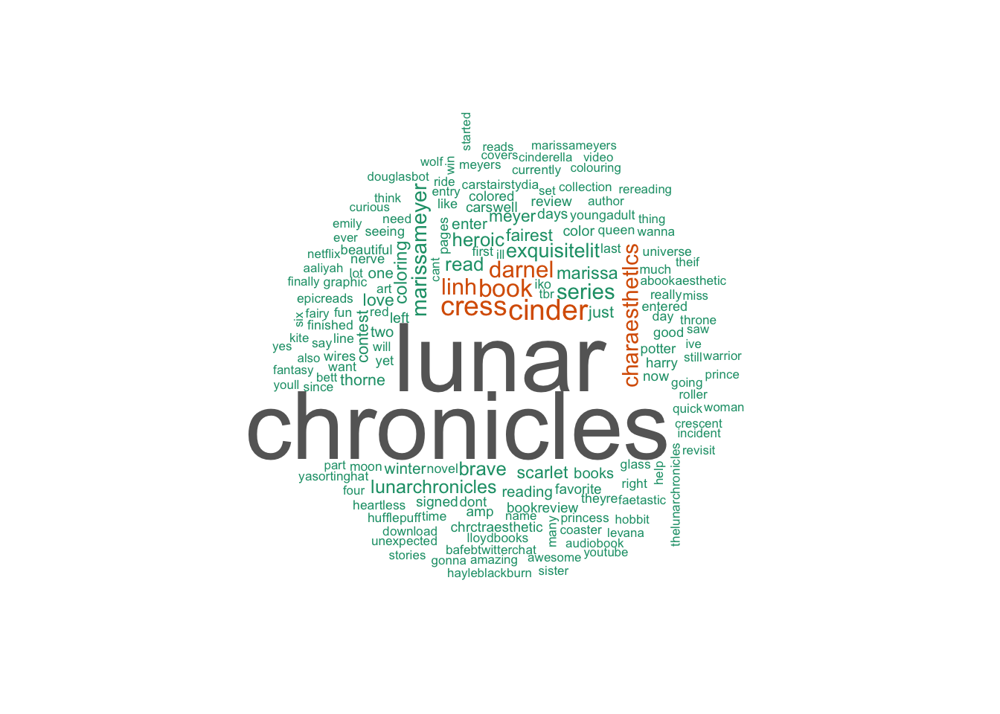

Author: Marissa Meyer
“I’m sure I’ll feel much more grateful when I find a guy who thinks complex wiring in a girl is a turn-on.”
― Marissa Meyer, Cinder
Sixteen-year-old Cinder is considered a technological mistake by most of society and a burden by her stepmother. Being cyborg does have its benefits, though: Cinder’s brain interference has given her an uncanny ability to fix things (robots, hovers, her own malfunctioning parts), making her the best mechanic in New Beijing. This reputation brings Prince Kai himself to her weekly market booth, needing her to repair a broken android before the annual ball. He jokingly calls it “a matter of national security,” but Cinder suspects it’s more serious than he’s letting on.
Although eager to impress the prince, Cinder’s intentions are derailed when her younger stepsister, and only human friend, is infected with the fatal plague that’s been devastating Earth for a decade. Blaming Cinder for her daughter’s illness, Cinder’s stepmother volunteers her body for plague research, an “honor” that no one has survived.
But it doesn’t take long for the scientists to discover something unusual about their new guinea pig. Something others would kill for.
library(twitteR)
library(httr)
consumer_key <- "qOvNAzHxL7i8R1AajYJZumw5M"
consumer_secret <- "1ETLwgpE6IKi8LW96Isp2wXuKFRDZSJ2F6tnRi2UWq29wAcaYt"
access_token <- "3011251745-xO3ltw0KN0WEyMMEvFTGqt04QTD3RILdcg91I4L"
access_secret <- "KrSa45CHZFSVUgUyFAnfkBYEQBJ8JX26A0ytTQ4r3atz9"
setup_twitter_oauth(consumer_key,consumer_secret,access_token,access_secret)## [1] "Using direct authentication"## Warning in doRppAPICall("search/tweets", n, params = params,
## retryOnRateLimit = retryOnRateLimit, : 3200 tweets were requested but the
## API can only return 398
# Run Twitter Search
tweets <- searchTwitter("TheLunarChronicles", n=500, lang="en")## Warning in doRppAPICall("search/tweets", n, params = params,
## retryOnRateLimit = retryOnRateLimit, : 500 tweets were requested but the
## API can only return 43head(tweets, 20)## [[1]]
## [1] "sierrakaila98: What better way to celebrate International Women's day than by drawing a few of my favorite ladies!… https://t.co/D3T5CeeVur"
##
## [[2]]
## [1] "BooknerdFaith: @marissa_meyer #thelunarchronicles my coloring entry!! I am so glad I finished in time! https://t.co/Q4zEwCWhoY"
##
## [[3]]
## [1] "BooknerdFaith: WORK IN PROGRESS❤❤❤ For Marissa Meyers coloring giveaway! #thelunarchronicles but I NEED TO FINISH B4 MIDNIGHT AHHHH https://t.co/39GF2gPvHo"
##
## [[4]]
## [1] "iamjustnatalie: RT @CoraFoerstner: #TheLunarChronicles is a roller coaster ride of the unexpected and down right fun.\n #bookreview #youngadult #fantasy\nhtt…"
##
## [[5]]
## [1] "sandrinetungka: QOTD: Which character do you like from #thelunarchronicles series and why?\n•\nEver since I met… https://t.co/UZ6F5lEuyL"
##
## [[6]]
## [1] "CoraFoerstner: #TheLunarChronicles is a roller coaster ride of the unexpected and down right fun.\n #bookreview #youngadult… https://t.co/Ebx6Eg51uZ"
##
## [[7]]
## [1] "Eleniwriting: I recently finished Stars Above, a collection of short stories from #thelunarchronicles universe… https://t.co/ETDycIbiJo"
##
## [[8]]
## [1] "LavenderProse: My Favorite Heroine!!⠀\n⠀\nOf the many wonderful ladies in #thelunarchronicles, Cress is my… https://t.co/lxToU7FnAz"
##
## [[9]]
## [1] "alavisher: RT @unitedbypop: Our modern day fairytale writer - @marissa_meyer #heartlessbook #thelunarchronicles @mykindabook https://t.co/ZHWxH3jQ72"
##
## [[10]]
## [1] "unitedbypop: Our modern day fairytale writer - @marissa_meyer #heartlessbook #thelunarchronicles @mykindabook https://t.co/ZHWxH3jQ72"
##
## [[11]]
## [1] "mizz_julie: Ooh.. Iko and Liam Kinney \xed\xa0\xbd\xed\xb8\x8f\xed\xa0\xbd\xed\xb8\x8d #TheLunarChronicles #WiresAndNerve\n\nAnyways, when is vol2 coming out?"
##
## [[12]]
## [1] "AliciaBedivere: #TheLunarChronicles\nquite obsessed with this.But we only got the first book in china！ freak out.by the way anybody… https://t.co/4tp3nH88ks"
##
## [[13]]
## [1] "FleurFerris: RT @RachaelCraw: My daughter's epic fan art for #TheLunarChronicles @marissa_meyer. My eyeballs love it! \xed\xa0\xbd\xed\xb8\x8d #Winter #Cress #Cinder #Scarlet…"
##
## [[14]]
## [1] "LifeAs_Louise: This shelf makes me happy \xed\xa0\xbd\xed\xb8\x8d #TheLunarChronicles #BooksofInstagram #Bookstagram \xed\xa0\xbd\xed\xb3\x9a https://t.co/wtm6vTSIBq"
##
## [[15]]
## [1] "CoraFoerstner: The Lunar Chronicles is a roller coaster ride of the unexpected and down right fun.\n#bookreview #TheLunarChronicles… https://t.co/cEb7Msauol"
##
## [[16]]
## [1] "unitedbypop: Guess who inspired #MarissaMeyer writing? #heartlessbook #thelunarchronicles @marissa_meyer @mykindabook https://t.co/ZHWxH3BrvC"
##
## [[17]]
## [1] "fiufkB8Y8c1xNgc: RT @Tekhnecian: NO WAY! It crashed the first time and then this! #TheLunarChronicles #QueenLevana https://t.co/fY1mewENPM"
##
## [[18]]
## [1] "RachaelCraw: My daughter's epic fan art for #TheLunarChronicles @marissa_meyer. My eyeballs love it! \xed\xa0\xbd\xed\xb8\x8d #Winter #Cress #Cinder… https://t.co/1MIu9WlfQu"
##
## [[19]]
## [1] "TrixterNixter: I'm Scarlet! Take the official #LunarChronicles character quiz to find out who you'd be! https://t.co/o6xkK8ZjNJ"
##
## [[20]]
## [1] "TrixterNixter: So I decided to put together a list of actors I'd love to see play #TheLunarChronicles characters.... https://t.co/yzXXZwumyS @marissa_meyer"https://www.amazon.com/Cinder-Marissa-Meyer/dp/1250007208
http://www.barnesandnoble.com/w/cinder-marissa-meyer/1100649238
summary from Goodreads
extras from Barnes & Noble